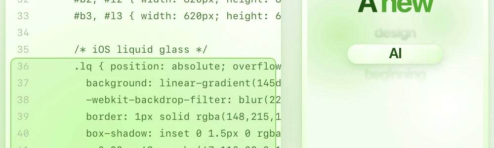
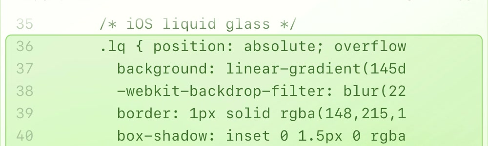

My AI tests my reels
before I post.
10 simulated viewers ↓
Doomscroller
···
SKIP 5s
Designer
···
STAY
Busy parent
···
SKIP 4s
Editor
···
STAY
Retiree
···
SKIP 3s
AI skeptic
···
STAY
Hustler
···
SKIP 7s
Rival
···
STAY
Sound-off
···
SKIP 9s
Niche fan
···
SKIP 9s
With
one text file.
SKILL.md
71
lines
4 of 10
quit
at 4 seconds.
I fixed it.
Same skill, new test.
before · 20 px code

“Too much tiny code.”
Busy parent · Doomscroller · Skeptic · Hustler
after · 30 px code

53
→
61
hook score / 100
That file
is a skill.
---
name
: hook-master
description
: Test a reel with
10 simulated viewers. Use when
I say "test this hook".
---
# Hook Master
1. Watch the reel once
2. Send 10 viewer personas
3. Write the report + fixes
name
when
to use
how
It sleeps until
the job matches.
ig-caption
create-video
hook-master
hook-master
✓
ig-reel
watch
hook-story
“test
this
hook”
What job would
you give
your AI?
Tell me below ↓
@alan.build
Comment
REPO
for the skill file